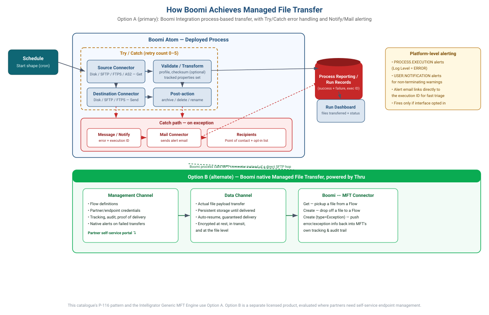
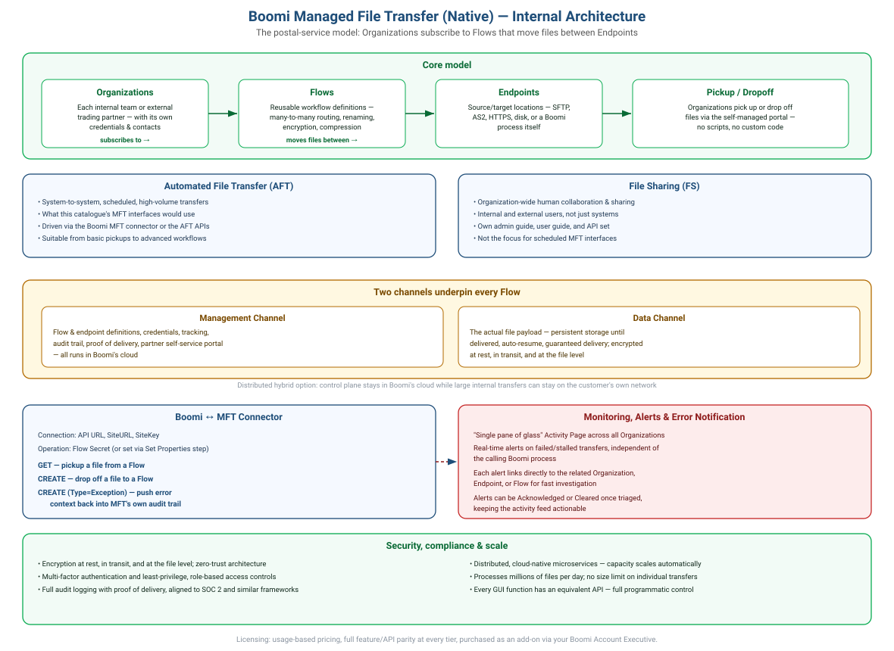

1a. Product vision
Vision statement. For integration teams and business requesters across the tax authority's technology estate who need managed file transfer interfaces to move data reliably between systems, Intelligrator is a self-service MFT provisioning portal that turns a multi-week engineering engagement into a five-minute request and a five-minute automated build. Unlike the current model — where every interface demands manual requirements-gathering, manual Boomi development, and manual deployment — Intelligrator validates connectivity, prevents duplication, and provisions the interface automatically the moment it's approved, with zero hand-written integration code per interface.
The problem worth solving
Every new file-transfer interface today is a bespoke engineering project: someone gathers requirements informally, an engineer hand-builds a Boomi process, testing happens late, and the requester finds out whether it actually works only after delivery. That's slow, inconsistent across engineers, invisible to the business while it's in flight, and it doesn't scale as the WebMethods/ChRIS estate migrates onto Boomi.
Why now
The platform is already moving toward Boomi iPaaS under a strangler-fig migration. That only pays off if new interfaces stop being built one bespoke process at a time. Intelligrator is the mechanism that makes the config-driven, generic-engine architectural decision (one engine process, each interface a config row — §7) real for the people requesting interfaces, not just the architecture diagram.
Guiding principles
| # | Principle | What it means in practice |
|---|
| 1 | Configuration over construction | Approval creates a config row, not a new component. This is the one architectural bet the whole product stands on. |
| 2 | Prove it before you promise it | Every connection claim is tested, not assumed — at request time, not at delivery time. |
| 3 | Governance without a bottleneck | Four-eyes approval stays human, but everything an approver needs to decide is already on the screen. |
| 4 | Visibility is a feature, not an afterthought | Status, run history, and audit are first-class screens, not database queries someone runs on request. |
How you'd know it's working
| Signal | Target direction |
|---|
| Time from approved request to live interface on Dev | Minutes, not weeks |
| Share of new interfaces built with zero manual Boomi development | Approaching 100% |
| Duplicate/near-duplicate interfaces | Caught before build, not discovered in production |
| Requesters emailing someone to ask "what's the status?" | Trending to zero — they check the tracker instead (§3b, US-601) |
What it deliberately isn't, yet
Not an event-triggered/file-arrival platform, not a transformation/mapping tool, not an auto-promoter to Test/Prod (see the Out of scope card above) — and not a replacement for platform engineering judgement. It removes the manual work, not the oversight.
The horizon. MVP proves the config-driven engine and the core request → approve → deploy loop. From there, the same self-service instinct extends outward: partners onboarding themselves for event-triggered transfers, promotion pipelines that carry the same evidence-based trust into Test and Prod, and eventually a genuine choice at request time between the hand-built engine (§1b) and Boomi's native MFT (§1c) — governed the same way, from the same portal. See §13 for the phased roadmap this vision points toward.
1b. How Boomi achieves MFT — technical mechanism & error notification
Boomi supports two distinct ways to move files under management. This catalogue and the Intelligrator Generic MFT Engine (§7–§8) use Option A. Option B, Boomi's own native Managed File Transfer product, is documented here for completeness and as a deliberate future evaluation, not something in scope today.

Option A — Boomi Integration process-based transfer (used by this catalogue)
- A Scheduled Start shape triggers a deployed process on the Atom at the interface's configured cron.
- A source connector operation (Disk, SFTP, FTPS, or AS2 — Get/List) retrieves matching files from the source folder.
- Optional validation/transform steps check the file profile, compute a checksum, and set tracked document properties.
- A destination connector operation (Send/Put) delivers the file to the target folder.
- A post-action step archives, deletes, or renames the source file per the interface's configuration.
- Every execution — success or failure — is automatically visible in Process Reporting, keyed by execution ID.
Error handling & notification (this is the mechanism behind F3.3 / US-207's notification opt-in)
- Connector steps are wrapped in a Try/Catch shape with a configurable retry count (0–5). The failed document and its
Try/Catch Message property are carried down the Catch path — the original document isn't lost.
- The Catch path feeds a Message/Notify step that assembles a structured error (interface name, file name, failing step, error text, execution ID).
- A Mail connector (or webhook, for Slack/Teams-style alerts) sends that error to the recipients captured at request time — this only fires when the interface's notification preference is opted in.
- Critical failures can additionally raise an Exception shape to deliberately halt execution with a custom message, rather than letting a partial transfer continue silently.
- Account/environment-level PROCESS.EXECUTION alerts (Log Level = ERROR) and USER.NOTIFICATION alerts (for non-terminating business warnings raised via Notify) provide a second, platform-wide safety net independent of any one process's own Mail connector.
- Alert emails commonly embed a direct link to the execution in Process Reporting (
...searchType=executions;executionId={execId}), so the platform team can jump straight to the failing run.
Option B — Boomi native Managed File Transfer (Boomi MFT, formerly Thru)
Who is Thru, and why "formerly"? Thru, Inc. was an independent company founded in 2002, building one of the first cloud-native Managed File Transfer platforms — early work included a global edge transfer network and, in 2010, the first public API for cloud MFT. For years Thru held Boomi's highest partner tier ("Technology Partner") and shipped the Thru MFT Connector for Boomi as a joint third-party integration. That changed on 15 May 2025, when Boomi announced a definitive agreement to acquire Thru, Inc. outright (deal expected to close by end of June 2025). Thru's technology is now embedded directly into the Boomi Enterprise Platform as Boomi's own native MFT offering — it's Boomi-owned IP today, not a third-party add-on being resold.
Boomi MFT still operates the way Thru originally built it, splitting responsibilities into two channels:
| Channel | Responsibility |
|---|
| Management Channel | Flow definitions, partner/endpoint credentials, tracking, audit, and proof of delivery — all run in Boomi's cloud, with native alerts on failed transfers and a partner self-service portal for endpoint management. |
| Data Channel | The actual file payload transfer between Boomi and external endpoints — with persistent storage until delivered, automatic retry, auto-resume, and guaranteed delivery even across network interruption. Files are encrypted at rest, in transit, and at the file level, within a zero-trust, SOC 2-aligned architecture. |
A Boomi Integration process talks to it through the Managed File Transfer connector: a Get operation picks up a file from a Flow, a Create operation drops one off, and a Create with Type=Exception pushes error/exception context back into MFT's own tracking and audit trail — so failures are visible in MFT's dashboards even independent of the calling process.
Option B is worth a deliberate evaluation specifically where external trading partners need to self-manage their own endpoints, or where transfer volumes and regulatory requirements exceed what a hand-built Try/Catch chain comfortably manages. It carries its own licensing and isn't a default — this catalogue's P-116 pattern and Intelligrator's Generic MFT Engine deliberately use Option A, keeping full control over the config-driven, approval-gated model already designed in §7.
1c. Boomi Managed File Transfer (native) — deep dive
A full technical treatment of Option B on its own terms: the model it's built on, its two applications, its architecture, how a Boomi process talks to it, and how it monitors and alerts on failure.

The core model — a postal service for files
Boomi MFT organises everything around three concepts:
| Concept | What it is |
|---|
| Organizations | Every internal team or external trading partner participating in file exchange is represented as an Organization, with its own credentials, identifiers, and contacts — configured once, reused across every Flow it participates in. |
| Flows | Reusable workflow definitions that move files between endpoints. A single Flow can handle many-to-many endpoint routing, renaming, encryption, and compression. Organizations simply subscribe to a Flow to join it — no per-partner scripting. |
| Endpoints | The source or target locations for a transfer — an SFTP server, an AS2 endpoint, an HTTPS location, or a Boomi process itself. |
Participants pick up or drop off files against a Flow via a self-managed portal — the same pattern as a postal service, rather than either party needing to know the other's infrastructure details.
Two applications, two different jobs
| Application | Purpose | Relevance to this catalogue |
|---|
| Automated File Transfer (AFT) | System-to-system, scheduled, high-volume file transfer — from basic pickups to advanced multi-step workflows. | This is the one that matters for MFT interfaces. AFT is driven from Boomi Integration via the MFT connector, or directly via the AFT APIs. |
| File Sharing (FS) | Organization-wide sharing designed for human collaboration, internal and external, with its own user guide, admin guide, and API set. | Not the focus here — FS is for people sharing files with people, not for scheduled system interfaces. |
Architecture — two channels behind every Flow
| Channel | Detail |
|---|
| Management Channel | Flow and endpoint definitions, partner credentials, tracking, audit trail, and proof of delivery — runs entirely in Boomi's cloud, with a partner self-service onboarding portal (subscribe to a Flow, add endpoints, manage credentials — no deployments needed). |
| Data Channel | The actual file payload transfer. Files are securely stored until delivered — with retry, auto-resume, and guaranteed delivery even across a network interruption. Encryption applies at rest, in transit, and at the file level. |
A distributed hybrid architecture option keeps the control plane in Boomi's cloud while letting large internal file transfers stay on the customer's own network — useful where data residency or network policy is a concern even though governance stays centralised.
How a Boomi Integration process talks to it — the MFT connector
- Connection component: API URL, SiteURL, and SiteKey identify and authenticate to your MFT instance.
- Operation component: defines the Flow Secret to target (or leaves it blank and sets it dynamically via a Set Properties step, so one reusable operation can serve many Flows).
GET — an inbound action that picks up a file from a Flow, returning the file in binary with its Filename and File Code as document properties.CREATE — an outbound action that drops a file off into a Flow, uploaded in chunks with no size limit.CREATE with Type=Exception — posts aggregated exception information back into MFT against the original File Code, so a failure detected inside a Boomi process is visible in MFT's own tracking, not just in Boomi's.
Monitoring, alerts, and error notification (native)
- A "single pane of glass" Activity Page gives real-time, end-to-end visibility across every Organization, Endpoint, and Flow — not just the ones a given Boomi process touches.
- Real-time alerts fire on failed or stalled transfers independent of the calling Boomi process — so a failure is visible even if the triggering process itself never runs its own error branch.
- Each alert links directly to the related Organization, Endpoint, or Flow page for investigation — the native equivalent of the execution-ID deep link described for Option A in §1b.
- Alerts are triaged explicitly: an admin can Acknowledge or Clear each one from the Activity Page, keeping the feed a true outstanding-issues list rather than an ever-growing log.
- Because every GUI function has a matching API, these alerts and their statuses can also be pulled into an external ticketing or monitoring system rather than relying solely on the native dashboard.
Security, compliance, and scale
Security
- Encryption at rest, in transit, and at the file level
- Multi-factor authentication
- Least-privilege, role-based access controls
- Zero-trust architecture
Compliance
- Full audit logging with proof of delivery and sender authenticity
- Alignment with frameworks such as SOC 2
- Supports regulatory file-exchange requirements in financial services, healthcare, and the public sector
Scale
- Distributed, cloud-native microservices — capacity scales automatically
- Processes millions of files per day
- No imposed size limit on an individual file transfer
Licensing
- Usage-based pricing
- Full feature and API parity regardless of tier
- Purchased as an add-on to the Boomi platform via your Boomi Account Executive
Where this leaves the choice for this programme: AFT is the relevant application (not File Sharing), and its connector maps directly onto the same Pickup/Dropoff/Exception vocabulary this catalogue already uses in §1b's Option A. The practical trade remains licensing and control — a hand-built Try/Catch chain costs nothing extra and stays fully config-driven and approval-gated (§7); Boomi MFT costs a separate line item but removes the need to build and maintain retry, auto-resume, partner onboarding, and alerting logic by hand, and gives external trading partners true self-service.
3b. Persona-based flow — build spec for the development team
This section hands the development team a screen-by-screen, action-by-action build spec: for each persona, every screen, the UI elements on it, the user action taken, the exact integration call it triggers (cross-referenced to the API in §10 and the Boomi Platform API objects in §7), and the resulting state transition (§9). Build the four persona flows below as separate route groups sharing the same design system.
Persona 1 — Requester
SSO Login→
My Requests dashboard→
Wizard Steps 1–6→
Tracker→
Run dashboard
| # | Screen | Key UI elements | User action | Integration call | Result / next state |
|---|
| 1 | SSO Login | Corporate SSO button | Authenticate | OIDC/SAML (F1.1) | Session established → dashboard |
| 2 | My Requests dashboard | Status-badged table; filters; "New Request" button | Click New Request, or open a draft | GET /requests?mine=true | Opens Wizard at step 1, or at last saved step for a draft |
| 3 | Wizard 1 — Requirement details | Purpose (textarea), Business Domain (governed dropdown), Business Value (textarea), Point of Contact (directory typeahead) | Next | POST /requests then PUT /requests/{id} per field save | State DRAFT; advance to step 2 |
| 4 | Wizard 2 — Source details | Protocol radio (SFTP/FTPS), host/port, credential entry or vault-reference picker, folder path/browser | Click Test Source Connection | POST /requests/{id}/test-source → Boomi Connection Test API process (auth + folder-exists) | Inline pass/fail badge + timestamp stored; fail requires documented override to proceed |
| 5 | Wizard 3 — Destination details | Same as step 4 for target | Click Test Destination Connection | POST /requests/{id}/test-destination (adds write-probe) | As above |
| 6 | Wizard 4 — Uniqueness & naming | Read-only suggested-name field; duplicate banner (green/amber/red) | Auto-runs on step entry | GET /requests/{id}/duplicate-check | Exact match blocks Next; similar match warns and requires confirmation |
| 7 | Wizard 5 — File & trigger | Filename pattern, format dropdown, expected volume, post-action dropdown, visual cron builder + plain-English preview, timezone, blackout date-range, notification opt-in toggle + recipient chips | Next | Client-side cron validation; PUT /requests/{id} | Advance to summary |
| 8 | Wizard 6 — Summary & submit | Read-only recap grouped by step with Edit links; declaration checkbox | Submit | POST /requests/{id}/submit | State → SUBMITTED; RequestSubmitted event published; redirect to Tracker |
| 9 | Tracker | Vertical stepper across the full state machine with timestamps/actors | Passive / refresh | GET /requests/{id} (poll or SSE) | Updates live as admin and engine progress the request |
| 10 | Run dashboard | Per-interface run table: date, overall status, file count | Drill into a run | GET /interfaces/{name}/runs | Per-file name/size/outcome/error detail |
Persona 2 — MFT Admin / Approver
SSO Login→
Approval queue→
Review detail→
Decision modal→
Provisioning status
| # | Screen | Key UI elements | User action | Integration call | Result / next state |
|---|
| 1 | SSO Login (Approver role) | Corporate SSO button | Authenticate | OIDC/SAML + role check (F1.2) | Non-approvers denied and audited |
| 2 | Approval queue | Oldest-first table: Request ID, suggested name, domain, requester, age, SLA flag; filters | Open a row | GET /approvals?state=SUBMITTED | Opens Review detail |
| 3 | Review detail | Full six-step wizard recap + Connection Test Evidence panel (timestamped) + Duplicate Check outcome panel | Choose Approve / Reject / Return | — | Opens Decision modal (comment mandatory for Reject/Return) |
| 4 | Decision modal | Comment box, confirm button | Confirm decision | POST /approvals/{id}/decision | State → APPROVED / REJECTED / RETURNED; requester notified |
| 5 | Provisioning status (approve path) | Read-only progress: Config → Secrets → Schedule → Smoke test | Passive / refresh | Subscribes to ProvisioningStepCompleted events | DEPLOYED_DEV or PROVISION_FAILED |
Persona 3 — Platform Engineer
SSO Login→
Provisioning failures dashboard→
Failure detail→
Retry / engine management
| # | Screen | Key UI elements | User action | Integration call | Result / next state |
|---|
| 1 | SSO Login (Platform Admin role) | Corporate SSO button | Authenticate | OIDC/SAML + role check | Access to platform-only screens |
| 2 | Provisioning failures dashboard | List: failing step, error summary, correlation ID, age | Open a failure | GET /requests?state=PROVISION_FAILED | Opens Failure detail |
| 3 | Failure detail | Full diagnostics: error payload, step log, compensation actions taken | Click Retry from failed step | POST /requests/{id}/retry-provisioning | Re-enters PROVISIONING at the failed step, no re-approval needed |
| 4 | Engine version / config management | Deployed engine versions list; canary config toggle | Promote / roll back a version | Boomi Platform API: Component / PackagedComponent / DeployedPackage | Controlled engine upgrades outside the self-service flow |
Persona 4 — Auditor
SSO Login→
Audit trail search→
Results + export
| # | Screen | Key UI elements | User action | Integration call | Result / next state |
|---|
| 1 | SSO Login (Auditor role) | Corporate SSO button | Authenticate | OIDC/SAML + role check | Access to audit screens |
| 2 | Audit trail search | Filters: entity/request ID, date range, actor, event type | Search | GET /audit?entity=... | Results table |
| 3 | Results + export | Paginated event list: actor, timestamp, transition, before/after state; Export CSV button | Export | Same endpoint with CSV format | Browser-native file download |
Every "Integration call" column above is the contract the frontend and backend teams build to — the frontend needs nothing beyond these calls, and the backend needs nothing beyond implementing exactly these calls plus the provisioning saga in §7.
5. User stories
Epic E1 — Access & identity
US-101MUST
As a requester I want to sign in with my corporate identity so that my requests are attributable to me without a separate account.
AC: Given a valid corporate identity, when I access Intelligrator, then I am authenticated via SSO and my display name and email are pre-populated on requests. Sessions expire per security policy.
US-102MUST
As a platform admin I want role-based permissions so that only authorised approvers can action the queue.
AC: Given a user without the Approver role, when they open the approval queue, then access is denied and the attempt is audited. An approver can never approve a request they raised.
Epic E2 — Request wizard
US-201MUST
As a requester I want to capture purpose, business domain, business value and point of contact so that approvers have the business context to make a decision.
AC: Given the requirement step, when any mandatory field is empty, then I cannot advance and the missing field is highlighted. Business domain is selected from a governed list. Point of contact is validated against the directory.
US-202MUST
As a requester I want to enter source server details and test the connection so that I know the interface will work before I submit.
AC: Given valid source details, when I click Test Source Connection, then the system authenticates, verifies the selected folder exists, and displays pass/fail with detail within 15 seconds. The test result (timestamp + outcome) is stored with the request. Given a failed test, then I cannot proceed without a documented override.
US-203MUST
As a requester I want to enter destination details and test the connection so that delivery-side failures are caught at request time.
AC: As US-202 for the destination, plus a write-permission probe (create/delete a zero-byte marker file where policy permits).
US-204SHOULD
As a requester I want to browse and select the source/destination folder so that I don't mistype paths.
AC: Given a successful authentication and an endpoint that permits listing, when I open the folder picker, then I can navigate directories and select one; the selected path populates the form. If listing is not permitted, free-text entry with validation applies.
US-205MUST
As Intelligrator I want to check that the requested interface is new and not a duplicate so that the estate stays clean and costs aren't duplicated.
AC: Given completed source and destination details, when I advance, then a fingerprint of (source host+folder, destination host+folder, file pattern) is checked against the interface registry. On a match, the existing interface name and owner are shown and submission of an identical request is blocked; a "similar" match (same endpoints, different pattern) shows a warning requiring confirmation.
US-206MUST
As a requester I want Intelligrator to suggest the MFT interface name so that naming is consistent without me knowing the standard.
AC: Given a non-duplicate request, then a name of the form MFT-<DOMAIN>-<SOURCE>-<TARGET>-<SEQ> is generated, guaranteed unique, and shown read-only to the requester (approver may override).
US-207MUST
As a requester I want to define file details, a schedule, and error-notification preferences so that the interface runs when and how the business needs.
AC: Given the trigger step, when I pick a frequency, then the equivalent cron and a plain-English description are displayed. Invalid cron is rejected. Notification is explicit opt-in/opt-out with at least one recipient required when opted in.
US-208MUST
As a requester I want a summary of all captured steps before submitting so that I can verify and correct mistakes.
AC: Given the summary step, then every captured value is shown grouped by wizard step with an edit link per group; when I submit, the request becomes read-only, receives a unique request ID, and appears in my tracker as SUBMITTED.
US-209SHOULD
As a requester I want to save a draft and resume later so that I don't lose work while gathering connection details.
AC: Wizard state persists on every step change; drafts appear in "My requests" as DRAFT and reopen at the last completed step.
Epic E4 — Approval workflow
US-401MUST
As an MFT admin I want a queue of submitted requests so that I can process approvals in order and within SLA.
AC: Given submitted requests, then the queue lists them oldest-first with request ID, name, domain, requester, age, and SLA indicator; filters by domain/status/requester are available.
US-402MUST
As an MFT admin I want the full request with connection-test evidence and duplicate-check outcome in one view so that I can decide without leaving the screen.
AC: Given a queue item, when opened, then all wizard data, both test results (with timestamps), and the fingerprint check outcome are displayed; actions Approve, Reject, Return for changes each require/permit a comment and are audited with actor and timestamp.
US-403MUST
As a requester I want to be notified of the approval decision so that I know whether to expect deployment or to amend my request.
AC: On any decision, the requester and point of contact receive a notification containing the decision, comment, and next steps; returned requests reopen as editable drafts.
Epic E5 — Automated provisioning
US-501MUST
As the provisioning engine I want to configure an approved request onto the Boomi MFT engine automatically so that no per-interface development is needed.
AC: Given an APPROVED request, then within 5 minutes the interface configuration is registered, credentials are injected into the secure store (never the application DB), the schedule is attached, and the interface is active on Dev. All provisioning steps are idempotent — re-running for the same request ID never creates duplicates.
US-502SHOULD
As the provisioning engine I want to run a post-deployment smoke test so that the interface is verified working before the requester is told it's live.
AC: After deployment, both endpoints are re-tested from the Dev runtime; success moves the request to DEPLOYED_DEV; failure moves it to PROVISION_FAILED with diagnostics and alerts the platform team, and compensating actions de-schedule the partial deployment.
US-503MUST
As a platform engineer I want provisioning failures surfaced with full diagnostics so that I can remediate quickly.
AC: Failed provisioning records the failing step, error payload, and correlation ID; retry from the failed step is possible without re-approval.
Epic E6 — Observability
US-601MUST
As a requester I want to track my request through every state so that I never need to email anyone for status.
AC: The tracker shows a timeline of state transitions with timestamps and actors, matching the state machine in §9.
US-602MUST
As an interface owner I want to see run history — overall run status and the files transferred successfully so that I can confirm business data is flowing.
AC: Per interface, each execution shows start/end, overall status, file count, per-file name/size/outcome, and error detail for failures. Data retained ≥ 90 days.
US-603MUST
As an auditor I want an immutable audit trail so that every request, decision, and deployment is evidenced.
AC: All lifecycle events are append-only with actor, timestamp, and before/after state; export to CSV is available to the Auditor role.
The eight themes
Each theme carries a suggested default position in italics — something concrete to agree or push back on, rather than a blank page.
Theme A · Operating model & ownership ★ decide first
Strategic questions
- Is MFT a centrally-owned strategic shared service, or federated per programme?
- Where is the line between central control and team self-service via Intelligrator — where does a human approval gate stay, and where is full automation acceptable?
- What is the funding / chargeback model as transfer volumes and partner counts grow?
Why it matters. This shapes the platform team, the guardrails Intelligrator must enforce, and how far self-service can safely go. Almost every other decision inherits from it.
Suggested default to react against. Central platform ownership with governed self-service. Intelligrator auto-provisions within a fixed guardrail set; anything outside the guardrails routes to human approval.
Theme B · Pattern boundary — what belongs on MFT ★ decide first
Strategic questions
- What is the explicit decision rule for MFT vs synchronous API vs event streaming vs batch ETL?
- Is MFT the strategic target for all file-based movement, or scoped to external / partner exchange with internal movement pushed to APIs and events?
- When is ad hoc File Sharing acceptable versus governed Automated File Transfer?
Why it matters. Without a boundary rule, MFT becomes a catch-all and the demand pipeline is unmanageable. It also determines what lands in the pattern catalogue.
Suggested default to react against. MFT is the strategic target for external / partner and bulk file exchange. Internal system-to-system movement defaults to API or event patterns unless file semantics are genuinely required.
Theme C · Legacy migration & coexistence ★ decide first
Strategic questions
- Do we replicate existing flows one-to-one (lift-and-shift), or rationalise and re-architect during migration?
- How long do the legacy platforms and Boomi MFT coexist, and is cutover phased (strangler) or big-bang?
- Can we preserve the partner side with a facade so external parties do not have to change endpoints or protocols mid-migration?
Why it matters. This drives the whole roadmap, the decommissioning plan, and the blast radius on external partners. Getting coexistence wrong risks broken partner flows.
Suggested default to react against. Strangler-style phased cutover, rationalising as you migrate rather than porting legacy debt. Preserve partner-facing endpoints via a facade to keep partner change to a minimum.
Theme D · Connectivity, protocols & partner onboarding
Strategic questions
- Which protocols are strategic (SFTP, AS2, HTTPS) and which do we sunset (plain FTP / FTPS)?
- What is the partner onboarding model at scale — managed vs self-service, static vs dynamic endpoints?
- Where does MFT sit relative to the network edge / DMZ, and how is IP allow-listing managed at scale?
Why it matters. Determines the reference connectivity architecture and how quickly new partners can be onboarded — a common bottleneck.
Suggested default to react against. Standardise on SFTP and AS2 for partner exchange; publish a partner onboarding runbook with defined SLAs. Sunset plain FTP.
Theme E · Security, compliance & data residency ★ decide first
Strategic questions
- What are the encryption and key-management standards (PGP at rest, TLS in transit), and who owns key rotation?
- How is data classification handled — where can files land and rest, and is UK data residency required for runtimes and file stores?
- What non-repudiation, audit-evidence retention, and DLP / anti-virus scanning is mandated for file movement (especially tax data)?
Why it matters. Non-negotiable and gates go-live. For tax data the residency, audit and non-repudiation bar is high, and it constrains the hosting topology.
Suggested default to react against. Assume UK data residency for runtimes and file staging, PGP at rest plus TLS in transit, immutable transfer-audit retention, and AV/DLP scanning inline. Confirm early — it is a hard gate.
Theme F · Architecture, scale & resilience ★ decide first
Strategic questions
- What is the runtime topology (clustered Molecule for HA), and where do files stage — given node-local staging is a known risk in clustered runtimes?
- What are the expected volumes and peak file sizes, and does native MFT meet the throughput ceiling? What is the scaling lever?
- What is the DR posture (RPO / RTO), the fate of in-flight files on failover, and the duplicate / ordering guarantees?
Why it matters. Foundational and hard to reverse. File staging on node-local storage in a clustered runtime causes correctness and resilience problems, so it must be designed deliberately.
Suggested default to react against. Clustered runtime for HA with shared, resilient staging (not node-local). Size against real peak volumes; define RPO/RTO and in-flight-file recovery explicitly in the NFRs.
Theme G · Governance, standards & environment promotion ★ decide first
Strategic questions
- Is the config-driven model (one generic engine + one config row per interface) the mandated organisation-wide standard?
- How do config rows promote Dev → Test → Prod — config-as-code / GitOps, or manual?
- What guardrails must hold for Intelligrator to auto-provision without a human, and what always requires approval?
Why it matters. Determines whether the config-driven approach actually scales and stays auditable, and defines the automation boundary for Intelligrator.
Suggested default to react against. Adopt config-driven provisioning as the standard and promote config-as-code through environments. Keep a tight, explicit guardrail set for unattended provisioning.
Theme H · Operations, support & commercials
Strategic questions
- What is the run / support model (L1–L3), who holds reprocessing rights (self-service vs ops-gated), and is it 24/7 or business hours?
- Is the native Activity Page enough for observability, or must transfers feed enterprise SIEM / ops tooling?
- What is the licensing / cost model at scale, and what is the exit and configuration-portability position?
Why it matters. Drives the support model, tooling integration, and total cost of ownership as the estate grows.
Suggested default to react against. Feed transfer telemetry into enterprise monitoring rather than relying on the Activity Page alone; define reprocessing rights and support tiers before Prod.